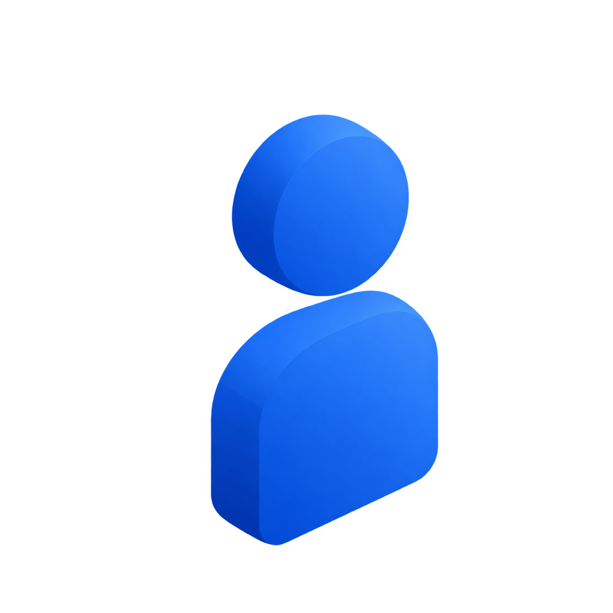

Welcome to 8x.
Human orchestration
at scale.
You are joining the engine behind hundreds of thousands of creators and billions of organic impressions. Here is everything you need to know to hit the ground running.
01 • The 8x Operating Thesis
What is 8x?
8x is a human orchestration company. Whenever there is a human in the loop, we supply, evaluate, and pay out this human across marketing, sales, and engineering.
Supplying verified humans at machine speed.
Whenever an 8x vertical demands authentic human voice, creativity, or critical taste, our engine taps into an active stream across 50+ countries. We supply people into scalable pipelines evaluated on pure performance.
creators in the 8x network

"In a future where AI can do a lot, what does everyone else do? They work for 8x."
Our vision is that billions of people will be under management on 8x platforms. We are the company that brings humanity to that future.
One Shared Architecture Across Every Vertical
Every new vertical we start leverages the exact same engine and experience from prior verticals. As we ship faster, every new product gets better and better.
02 • Mindset & High Expectations
What we will expect from you.
We don't over-index on experience. We find people with potential and give them unreasonable tasks: sometimes they make it happen.
Potential over experience and unreasonable tasks
We don't over-index on experience. We find people with potential and give them unreasonable tasks and ambitious projects. We ask the world of you, and sometimes you make it happen. When you do, we double down and invest more and more in you.
Put your best foot forward and give 200%
You will be working with exceptionally smart people who will have high expectations of you. Put your best foot forward, be ambitious, and never underestimate yourself. If you invest in us, we will invest in you back: this is truly one of the biggest opportunities of your career.
Be AI native with the taste to distinguish slop
You will be forced to be AI native to move at extreme speed and meet ambitious deadlines. Use AI to penetrate barriers on things you could not do before, whether asking Claude or digesting complex topics. But you are 100% accountable for your output: never ship AI slop.
Be proactive, build systems and master your craft
Never wait for permission or tasks. You will have a buddy and brilliant teammates supporting you, but it is on you to read up, figure things out, build scalable systems, and proactively become the best person in the world at what you do.
03 • Operating Environment & Upside
Remote culture and opportunities.
Remote-first freedom paired with high personal accountability and direct company ownership.
Slack is our virtual office
You can work from anywhere, whether in the Slovenian mountains or at home with family. But with great power comes great responsibility: if you do not show up on Slack, it is like you did not show up at the office.
Make yourself visible
Even if you do great things on your own, if people do not notice, no one will know your impact. Communicate clearly in public squad channels, avoid private DMs as much as possible, and share information across teams.
Equity & SF sprints
Contributors who provide lasting value earn stock options to own a piece of 8x. You will also have access to 8x team houses in San Francisco for intensive in-person build sprints, and the autonomy to shape your own role.
This is the part where you'll put the Slack invite and any useful links!
I don't have that yet so it's your turn to hire me to complete this page :)